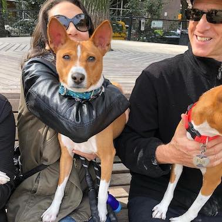

About Me
Hi! My name is Liz and I'm originally from Detroit, Michigan. I've been living in Manhattan since the 1980's when the city looked and felt very different than it does today. I've have the priviledge to explore several career paths and develop many interests and hobbies. I began working in publishing, then entered the fashion industry working in the luxury market sector in buying, selling & merchandising. I spent more than a decade in the interiors industry collaborating with the architectural and design communities on commercial and high end residential projects.
Like many New Yorkers, I found the urban life quite stressful and physically demanding. This is when I discovered my passion for Pilates and ultimately studied under the tutelage of the renowned Romana Kryzanowska; the only living decendent and apprentice to Joseph Pilates.
Today, I spend much of my free time with my 2-year-old beloved Basenji who is pictured here with my husband. He comes from a long lineage of AKC Grand Champions and is following his ancestors campaigning for his title. My free time is spent training and grooming him for the show ring.
If you're interested in learning more about this unique, exquisite and ancient Basenji breed, please visit my Passion "Pet" Project site here.